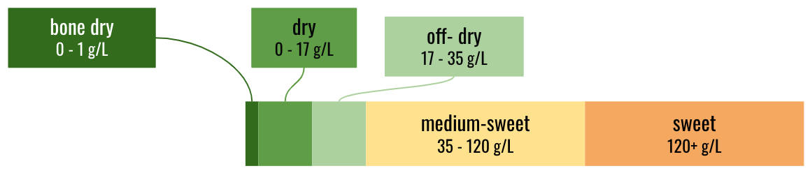

The Role of Residual Sugar in Wine Quality
Statistics | Causal Theory | Linear Regression | R
July 2021

Project Description
By better understanding how sweetness affects the quality perception of wine experts, wineries may be able to tailor their wines better based on popular customer tastes and hencd increasing sales. This project aims to study the difference in the level of residual sugar, the main chemical component that adds sweetness, and its effects on wine quality. Residual sugar is the amount of sugar from natural grapes that is leftover in a bottle of wine after the fermentation process is completed. During the fermentation process, sugar is converted to alcohol with the help of yeast, and winemakers can choose at which point to terminate the fermentation process before all the sugar gets consumed. This decision could affect both the levels of residual sugar and the alcohol concentration. Therefore, the research question is Does sweeter non-sparkling wine lead to better quality review by wine experts?
Skills
Statistics, Causal Thoery, Linear Regression
Tools
R
Our Dataset
Our research leverages data from the UC Irvine Machine Learning Repository, which contains 4,898 records of exported white and 1,599 records of red wines from the Vinho Verde region located in northern Portugal. The dataset includes data for common physicochemical properties recorded by machines and also sensory assessment evaluated by humans. The wine quality assessments were recorded on a Likert scale of 0 to 10 with 0 being very bad and 10 being excellent. Since the assessment process was different for white and red wine, recorded data were kept separately in two datasets. Both the physiochemical properties and the sensory assessment were conducted during the wine certification process, which is a common process for export goods in order to help countries stratify wines into different categories for ease of pricing.
Revision of Research Question - Why White Wine Only?
We choose to not combine the white and red wine datasets, and evaluate only the white wine dataset, for two reasons detailed below.
First, there exists an inherent taste difference between red and white wine samples. Furthermore, within our dataset, white and red wines’ physicochemical signals and qualities were collected in separate processes. Therefore, differences in the quality metric or calibration of machines could give contradictory results for red and white wines, and we felt it would be inconsistent to combine the two datasets and analyze them together.
Secondly, we find that the range in residual sugar in the red wine dataset is quite limited. With the maximum residual sugar concentration for the red wine dataset being 15.5 g/L, these red wines can at most be categorized as dry wines as shown in the figure below.

Therefore, this dataset is not suited for us to extrapolate any of our analysis into the sweet or medium sweet red wine categories because such red wine samples do not exist in our dataset.
As such, we decide to examine causal relationships between levels of residual sugar in non-sparkling white wine and wine quality, and specifically, we tailored our research question to the below:
Does sweeter non-sparkling white wines lead to better quality review by wine experts?
Theoretical Causal Theory
Based on our literature review, we have created a causal pathway below that details the relationship of all of our 11 physicochemical signals. The direction of effect between two variables is presented by the directional arrows of the arrow and each two signals’ relationship is denoted by either an increasing effect correlation (+) or a decreasing effect (-).
In the absence of oxygen, through the process of fermentation, yeast converts the natural sugar in grapes into alcohol and carbon dioxide (CO2). The more sugar there is in the grapes, the higher the potential alcohol level of wine if the yeast are allowed to carry out fermentation to completion. This, in turn, means that the less residual sugar is left in wine. In other words, the earlier the winemakers stop fermentation, the more residual sugar will be left, and hence the sweeter the wine is.
Opposite to the relationship between fermentation duration and residual sugar concentration, usually the longer that fermentation goes on, the more sugar is converted into alcohol, resulting in higher alcohol content in wine. Therefore, there exists a 2-way relationship between residual sugar concentration and alcohol in wine, that is, the higher the alcohol content, the lower the residual sugar concentration. Since the goal of our project is to examine the causal relationship between residual sugar concentration and quality, we think that alcohol needs to be excluded from our models as it will mask the effect of residual sugar concentration on quality.
In addition, both alcohol content and level of residual sugar affect wine density. As alcohol has a lower density than water, the higher the alcohol content, the lower the wine density. The higher the residual sugar concentration, the higher the wine density. Because of this correlation, density is excluded from our model building process.
During the process of fermentation, acetic acid, which is considered the main component of volatile acidity in wine, is produced as a byproduct through oxidation, and wines that have long fermentation periods generally accumulate higher levels of acetic acid. Excess acetic acid can contribute to the wine fault, giving the wine a “nail polish remover” smell and vinegar taste. Therefore, high acetic acid conentration is considered to have a negative effect on wine quality.
Citric acid is another acid that has many uses in wine production. Citric acid is often added to the finished wines to give a “fresh” flavor, and hence has a positive effect on wine quality. However, citric-sugar co-metabolism can increase the formation of volatile acid (i.e., acetic acid) in wine, which can affect the wine aroma and wine quality negatively. We hypothesize that there should be an optimal citric acid concentration in wine, where it will add freshness to wine without giving a vinegar taste.
Sulfur Dioxide is a common chemical compound used in winemaking as a preservative and an antibacterial agent. Total sufur dioxide concentration is the portion of sulfur dioxide that is free in the wine (i.e., free sufur dioxide concentration), plus the portion that is bound to other chemicals in the wine. Free sufur dioxide concentration and pH of the wine determines how much sulfur dioxide is available in the active form to help protect the wine from oxidation and spoilage. Sulfur dioxide’s antimicrobial and antioxidant efficiency in wine depends on a wide range of factors, of which the most important ones are pH, residual sugar concentration, and alcohol content. The lower the pH, the less sulfur dioxide needed; the higher the alcohol content, the less sulfur dioxide; the lower the level of residual sugar, the less sulfur dioxide needed. Because sulfur dioxide also affects wine quality, residual sugar is a cofounder in this relationship. To simplify our model building process, sulfur dioxide is left out.
pH is a method of determining the strength of acid in a solution. The effect of pH on wine quality can be explained by a combination of all acids. pH is not independent from acid concentrations, and if we include pH in our model, it will mask other effects of various acids on quality. Therefore, we decided to exclude pH in our model building process.
Wine grapes from cooler climates have a higher level of tartaric acid concentration, typically 6 g/L and higher. Wine grapes from warmer climates generally have a lower level of tartaric acid concentration, around 1 - 2 g/L. Therefore, we transform the variable tartaric acid concentration, which is a continuous measure of tartaric acid concentration, to a categorical control variable "climates" to depict the climate the wine grapes are from. Climates is set to be equal to cooler if tartaric acid concentration is greater or equal to 6 g/L and warmer if it is less than 6 g/L. Similarly, the sodium chloride concentration is highly correlated with the soil and the water condition of certain geographical regions. We have added sodium chloride concentration as a control variable as well into our hypothesized models.
The error term, epsilon, is everything else that could affect wine quality and that is independent of any of the other variables in our model. This could include factors such as oak and barrel aging process, the harvest of the grapes, capping method, wine storage, and transportation. We also assume that there are no factors in the error term that directly affect both the outcome variable and the explanatory variables.
| Variable | Measure | Unit | Description | Range | Stdev |
|---|---|---|---|---|---|
| fixed acidity | Tartaric acid conc. | g/L | One of the three main acids found in wine grapes. Plays prominent role in maintaining chemical stability of the wine, wine’s color, and influencing the taste of the finished product | 3.8 - 14.2 | 0.844 |
| volatile acidity | Acetic acid conc. | g/L | Associated with “acetification” of wine and is responsible for the sour taste of vinegar | 0.08 - 1.10 | 0.101 |
| citric acid | Citric acid conc. | g/L | Add “freshness” and flavor to wine | 0.00 - 1.66 | 0.121 |
| residual sugar | Residual sugar conc. | g/L | From natural grape sugars leftover in wine after the alcoholic fermentation finishes. 10 g/L ~ 1% sweetness | 0.6 - 65.8 | 5.072 |
| chlorides | Sodium chloride conc. | g/L | Reflects local soil and water conditions (i.e., distance between vineyard and coast) | 0.009 - 0.346 | 0.022 |
| free sulfur dioxide | Free SO2 conc. | mg/L | antioxidant and antimicrobial, making it an effective preservative for wine. Amount depends on pH. Higher pH, less free SO2 | 2 - 289 | 17.077 |
| total sulfur dioxide | Total SO2 conc. | mg/L | Free SO2 and those Abound to other chemicals in wine | 9 - 440 | 42.498 |
| density | density | g/L | Determined by concentration of alcohol, sugar, glycerol, and other dissolved solids | 0.9871 - 1.0390 | 0.003 |
| pH | pH | N/A | A measure of acidity. Lower pH indicates higher acid levels | 2.720 - 3.820 | 0.151 |
| sulphates | Potassium sulphate conc. | g/L | Acts as an antioxidant, removing oxygen suspended in the wine, which slows down aging | 0.22 - 1.08 | 0.114 |
| alcohol | % vol. alcohol | % | Alcohol content in wine only changes during fermentation | 8.0 - 14.2 | 1.231 |
Statistical vs. Practical Significance
We obtained the coefficient estimate of the effect of residual sugar on wine quality to be -0.014 for the base linear regression model with a p-value less than 0.001, indicating that for every unit increase in gram per Liter (g/L) of residual sugar, there will be an approximate decrease of 0.014 in expert rated wine quality.
It is also important to evaluate the practical significance of our results. Given that with a large sample size of over 100 samples in both the train and test dataset, our coefficient estimate is 0.014, which is one hundredth of a unit in Likert scale. Based on our model, wine with no residual sugar will receive a 5.883 grade in rating by wine experts. With an unit increase of g/L for residual sugar, our model tells us that we will observe a -0.014 decrease in rating. The typical range of residual sugar in wine that ranges from 0 g/L to 120 g/L. This means that wine quality effect due to residual sugar would decrease 1.68 grade in rating when increasing residual sugar to 120 g/L. The drastic changes in the manufacturing process to achieve a 120 g/L to 0 g/L reduction in residual sugar will at most lead to a 1.68 degree of increase in wine quality rating. This leads us to conclude that although our model was able to establish a significant causal relationship between residual sugar and wine quality, the effect size is really small, hence no practical significance can be evaluated.
We understand that it is easier to achieve statistical significant results given our large sample and small standard error. Therefore, the reason that our coefficient estimate is significant could simply be due to having a large sample size.
Discussion
Despite our proposed causal theory that sweeter non-sparkling wines lead to better quality review by wine experts, analysis of our dataset showed the opposite. In fact, residual sugar concentration has a negative and significant effect (β1 = -0.019, p < 0.01) on wine quality as reviewed by wine experts when fitting test dataset using our linear regression model
Our results disprove the theory that simply adding sugar will make the wine quality score higher. There could exist additional complex relationships among many of the variables that we have not found. Thus, increasing the residual sugar may inadvertently affect other variables in the winemaking process, and therefore negatively affect the quality.
The combination of a statistical significant result and a small effect size could indicate that the quality of wine may be driven by a myriad of other multiple characteristics and the sweetness of white wine may not be a significantly important factor. Our model has the adjusted R2 value of 0.073. This indicates that only 7.3% of the wine quality variation can be attributed to the model. As this value is relatively small, it does not adequately explain the relationship.
It was also determined that different types of wine have different intended levels or ranges of residual sugar. This means that various types have been evaluated over many years and a certain recommended balance of the variables involved in the winemaking have been achieved with a recommended amount of residual sugar. It is possible that many consumers prefer types of wine that are sweeter in general, but as our study involved only white wine, this does not mean that only increasing the residual sugar in that type of wine will increase the quality. Furthermore, since our dataset was collected more than a decade ago and changes in consumer preferences could have happened more recently. Therefore, we could conduct follow up analysis on looking at the causal relationship between residual sugar and quality for more recent wines produced from US wineries.
Our recommendation is for winemakers to refrain from simply increasing residual sugar in the hopes of making the wine receive a higher quality rating, but rather engage in research on their specific type of wine, and a large number of variables that may affect the flavor to achieve a superior and more desirable product. Increasing the residual sugar alone is not recommended to achieve a more desirable and higher quality wine.
See the complete project in my GitHub repository.